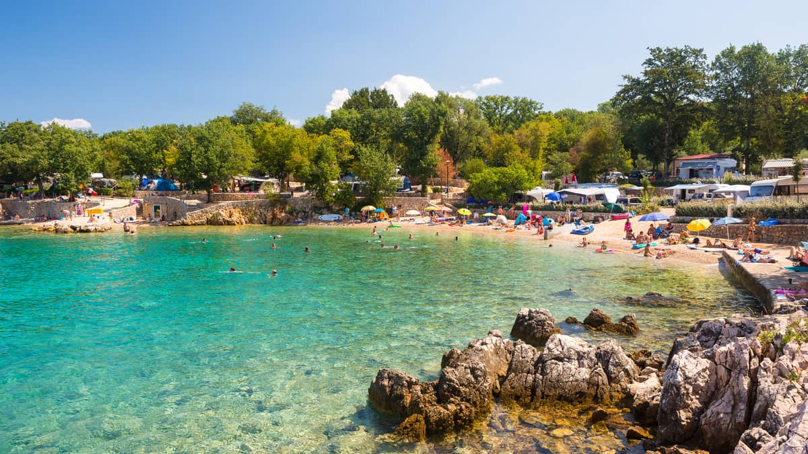

Marija Bistrica is a village and municipality in the Krapina-Zagorje
County in central Croatia, located on the slopes of the Medvednica
mountain in the Hrvatsko Zagorje region
north of the capital Zagreb. The municipality has 5,976 inhabitants,
with 1,071 residents in the settlement itself.
Malinska is a settlement in the northwestern part of the island Krk in
Croatia and an important tourist town. It lies on the coast of the
Adriatic Sea,
in the picturesque bay facing Opatija and Rijeka.
Slika u veličini 95% od originalne
Slika u veličini 20% od originalne
Slika u veličini 26% od sirine preglednika
Slika u veličini 12% od sirine preglednika
Slika u veličini 94% od sirine preglednika
Slika s narusenim omjerom sirine i visine
Montreal is the most populous municipality in the Canadian province of
Quebec
and the second-most populous municipality in Canada.
Maribor is a Slovenian city set amid wine-region hills on the Drava
River.